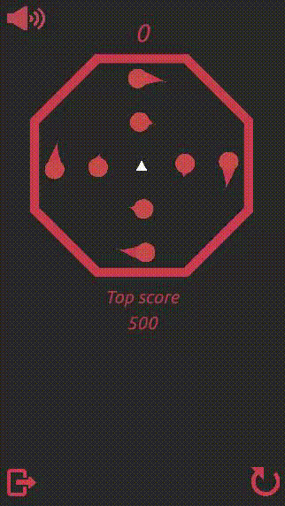

Projets

|
/ RepentanceRepentance est un platformer 2D. Le projet a débuté lors de la Global Game Jam 2020, dont le thème était "Réparer". On y incarne un fantôme cherchant à réparer les erreurs commises lorsqu'il était vivant. Repentance a été développé sur Unity. |

|
/ Cyber BallCyber Ball a été mon projet de 3ème année développé sur Unity. C’est un jeu de type infinite runner, aux environnements « synthwave ». Le jeu a été pensé pour être joué avec la Kinect 2.0 sur une borne d’arcade. |

|
/ SplashSplash est un serious game platformer en 2D développé sur Unity, visant à introduire le grand public au notions d'algorithmie. Vous y incarnez un petit bloc avançant à travers des niveaux à thèmes : les généralités, les primitives, les variables, conditions, et boucles. Ce jeu a été réalisé lors d'une game jam organisée en 2020. |

|
/ Roll BollRoll Boll est un jeu mobile de type infinite runner développé sur Unity. On y incarne un boule se déplaçant pour éviter des obstacles et gagner des points. Il a été publié en Juin 2019 sur le Google Store. |
|  |
/ OctogonOctogon a été un projet mené lors du confinement 2020 en une journée. C'est un jeu mobile développé sur Unity en une journée. C’est un jeu de scoring, dans lequel il faut se déplacer pour attraper les points malgré la vitesse augmentant graduellement. |

|
/ Crash WaveCrash Wave est une démo développée sur Unity en une semaine en Décembre 2019. C'est un jeu de course en multi-joueurs, utilisant la web-cam pour les déplacements. Les joueurs s'inclinent verticalement pour se déplacer. Des boosts et malus sont placés sur le chemin. Aucun input clavier ou souris n'est requis. Il a été développé avec une équipe de trois personnes, LAMARRE Benoit, FACHE Bruno, et moi-même. |

|
/ Brewery TycoonBrewery Tycoon est une démo d'un serious game développé sur Unity. On y incarne un robot cherchant à commencer son business de fabrication de bière. On y apprend les étapes de base de la création de bière. |

|
/ Space InvadersSpace Invaders est une reconstruction avec des changements du jeu original, développé sur Unity. |

|
/ Sorciers Vs VikingsSorciers Vs Vikings est un visual novel développé sur Ren'py. Il visait à proposer une expérience narrative à plusieurs embranchements. |

|
/ MinotaurusMinotaurus est un jeu de plateau développé en game jam. |